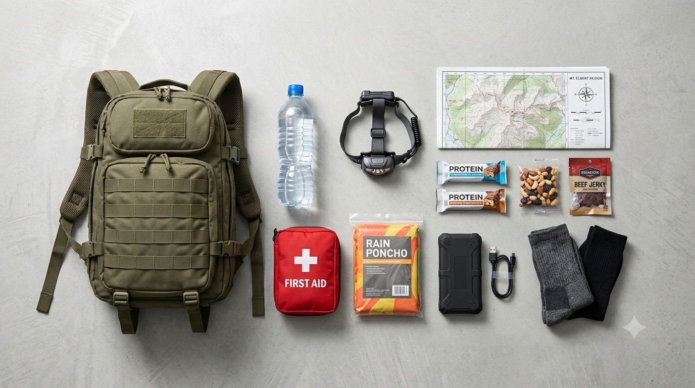

Emergency Bag Checklist: What to Pack in a Small Backpack
Imagine having ten minutes to leave home. Power is out, your phone battery is low, and roads may be blocked. You can take one backpack. The goal is not to carry every survival gadget you own; it is to take the essentials that help you reach safety, wait for help, or manage a short disruption without becoming too exhausted to move.
A useful emergency backpack supports the first day or three. It is not a complete household emergency kit. This guide assumes one adult and a modest 20–30-litre bag, but the right load depends on your route, climate, health, mobility and local hazards. Wear comfortable, broken-in shoes suited to the route. Follow official evacuation instructions rather than choosing a route just because it looks adventurous.

1. Plan for the Emergency You May Actually Face
Start with the likely local risks and where you would go. A city power cut, a flood evacuation and a long outdoor walk need different equipment. For a flood, protect documents and medication in waterproof bags and obey evacuation warnings; never walk or drive through floodwater. For heat, add water and sun protection. For cold or mountain travel, shelter and insulation become more important.
Plan for the people who depend on you. Children, older adults, disabled family members and pets may need their own medication, food, mobility equipment, carriers or hygiene supplies. Keep emergency contacts and a meeting point written down in case phones or networks fail.
2. Water: Carry What You Need, Not a False Promise
Water is heavy: one litre weighs about one kilogram. For some adults on a short, temperate journey, 1.5–2 litres may be a reasonable starting carry, not a full-day allowance. Heat, exertion, illness and limited refill options require more. Do not assume a stream or tap will be safe or available.
Carry refillable bottles and, if useful, a collapsible pouch. Add a treatment method suited to likely sources, such as a properly rated filter or purification tablets, and follow its instructions. Many filters do not remove viruses, salt, fuel or dissolved chemicals. Boiling or ordinary hiking filters will not make chemically contaminated or floodwater safe.
For home storage, guidance differs by country. The US CDC recommends at least one US gallon (3.8 litres) per person per day for three days. That is a household reserve benchmark, not a backpack target.
3. Food: Ready to Eat and Familiar
Pack familiar food that needs no refrigeration, complicated cooking or much water: energy bars, nuts, roasted chickpeas, dried fruit, crackers or ready-to-eat meals. Include enough substantial food for the time you expect to be away; a few snacks are not a three-day supply.
Allow for allergies and medical needs. Keep food sealed, protect it from heat and moisture, and replace it before it expires. If a meal needs a stove, fuel and cookware, count those too—or choose a simpler meal.
4. First Aid and Personal Medication
A small kit you know how to use is better than unfamiliar specialist equipment. Include plasters, blister care, sterile dressings or gauze, medical tape, a bandage, antiseptic wipes and disposable gloves.
Pack essential prescription medication in labelled packaging where possible, following medical advice and storage requirements. Carry a short list of medicines, allergies and key conditions. Add essentials such as glasses, inhalers, EpiPens, hearing-aid batteries, mobility aids or medical-device supplies. Protect temperature-sensitive medicines from heat.
Carry specialist trauma equipment only with suitable training. A first-aid kit does not replace professional care.
5. Shelter, Clothing and Basic Hygiene
Pack for the weather and likely waiting time: a rain poncho or waterproof layer, one warm layer, a suitable hat, and spare socks and underwear. Add a compact bivy, blanket or tarp only if it suits the conditions and you know how to use it. A thin emergency blanket is a backup, not proper insulation.
Carry a small hygiene pouch: hand sanitizer or soap, tissues or toilet paper, a few wet wipes, personal menstrual supplies if needed, and small bags for rubbish or wet items. Hand sanitizer helps when soap and water are unavailable, but it does not replace washing visibly dirty hands. Never use a stove, charcoal burner or open flame inside a tent, vehicle or enclosed room; carbon monoxide can be fatal.
6. Phone, Light, Navigation and Communication
Pack your phone, cable and charged power bank. Download offline maps, save essential contacts, and write down a route or meeting plan. A paper map is a useful backup; carry a compass only if you know how to use it.
A headlamp keeps both hands free. Add spare batteries, a whistle and, where local broadcasts are available, a battery or hand-crank radio. Avoid carrying several devices that do the same job.
Use power carefully: lower screen brightness, close unnecessary apps, and keep the phone for navigation, alerts and essential calls. Do not rely on internet access or a mobile signal always being available.
7. Documents, Cash and Personal Items
Keep copies—not every original—of important identification, insurance or medical information in a waterproof sleeve. Add a paper list of contacts, addresses and meeting points, a pen, and a little cash in small denominations because card readers and cash machines may stop working. Carry spare keys, glasses or hearing-aid supplies only when they are genuinely needed. Protect sensitive information and take only what you need.
8. Small Tools and Fire-Starting
One compact multitool, a short length of utility cord and a little repair tape are enough for many bags. Avoid heavy tools you have no clear use for; water, medication, light and shelter come first.
A lighter is compact and waterproof matches can be a backup, but fire-starting supplies are optional for many urban evacuations. Pack them only for a safe, lawful purpose. Never use a fire or fuel stove in an enclosed space.
9. Final Checklist: Pack, Test and Maintain
Use this short list as a final check. Adjust it to your household and local risks; do not add items just to tick every box.
- Comfortable backpack that fits the person carrying it
- Water, refill capacity and suitable treatment method
- Ready-to-eat food for the expected journey
- First-aid kit, personal medication and medical essentials
- Phone, cable, charged power bank, offline map and contacts
- Headlamp, whistle and a way to receive local updates
- Weather layer, spare socks and suitable compact shelter
- Hygiene supplies, waste bags and waterproof document copies
- Some cash and any essential supplies for children, pets or disability
Keep heavy items close to your back and secure loose gear. Waterproof critical items inside the bag. There is no single safe backpack weight for everyone: load it, wear the shoes you would use, and test it on a comfortable walk. If it causes pain, numbness, poor balance or unusual exhaustion, reduce the load or improve the fit.
Every few months, test lights and power banks, replace used supplies, check food and treatment expiry dates, and review medication and contacts. Adjust clothing when seasons change. Store the bag somewhere accessible, dry and away from extreme heat; keep bulk water, food and sanitation supplies in a separate home kit.
Sources and Further Reading
Preparedness guidance varies by country and hazard. Follow local emergency services and public-health instructions during an actual incident.
This is a general preparedness guide, not a guarantee of safety. Adapt your bag to local hazards, medical needs and official instructions.
Suggested Quizzes
Ready for another challenge? Try one of these apocalypse and survival quizzes.